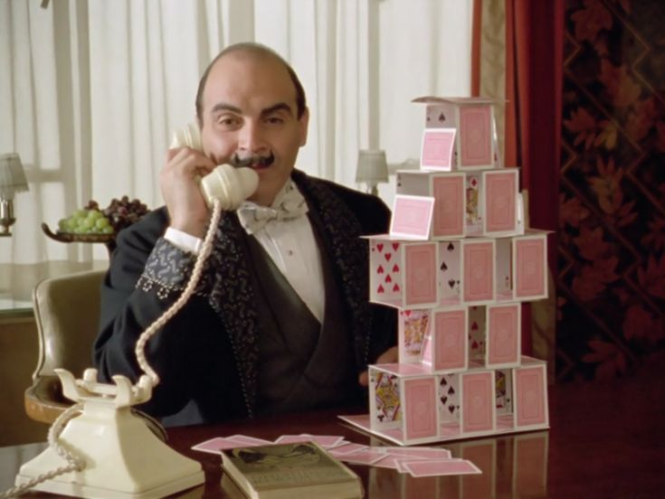
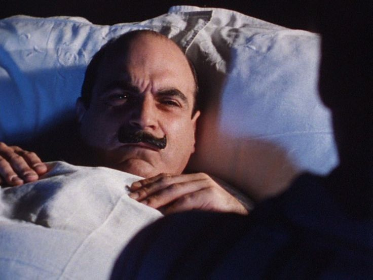
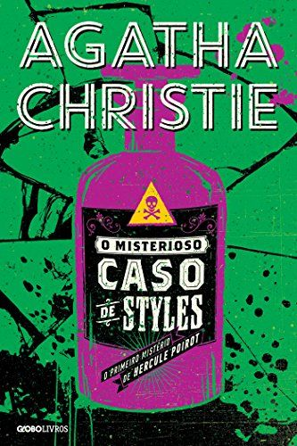
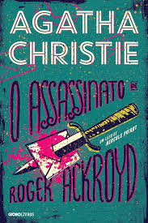
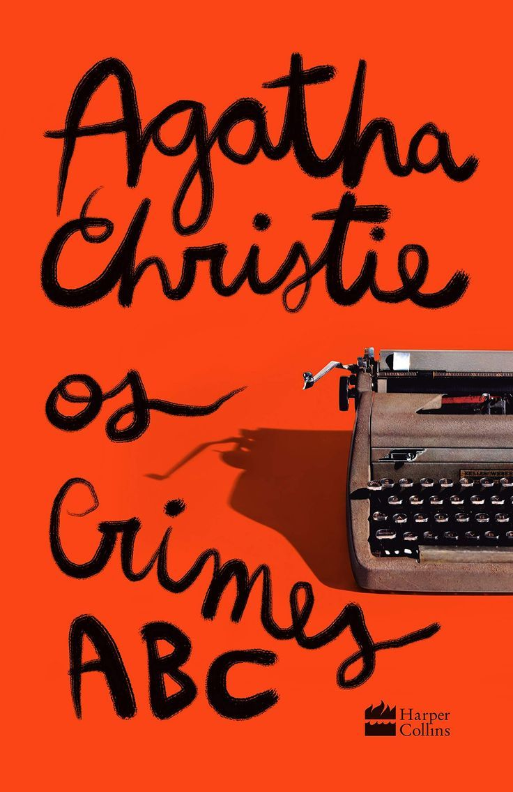
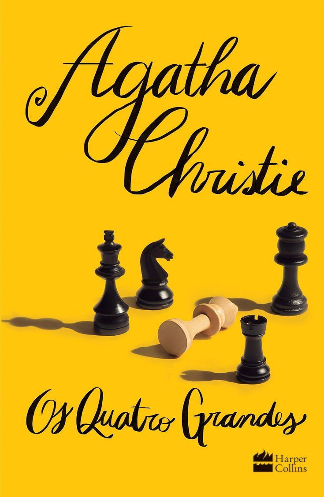
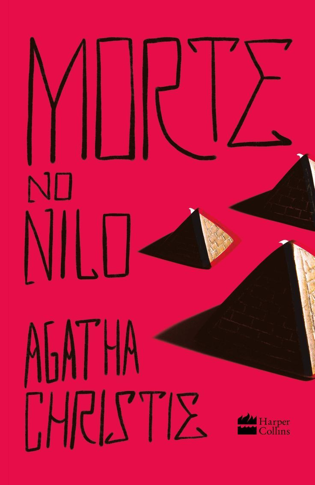

Hercule Poirot: O maior detetive da literatura
Em homenagem a um dos maiores nomes do gênero, no post de hoje, Snoopy lê Hercule Poirot.
Confira curiosidades e 5 indicações de livros para ler do nosso amado detetive!

Rainha do Crime

Como falar sobre Hercule Poirot sem mencionar sua mãe? Agatha Christie (1890-1976) foi uma escritora inglesa que criou "Hercule Poirot", que aparece em 33 de suas obras e tornou-se um dos mais célebres personagens da ficção policial. Agatha foi a maior escritora policial de todos os tempos. Escreveu 93 livros e 17 peças teatrais.
Agatha Mary Clarissa Miller, conhecida como Agatha Christie, nasceu em Torquay, condado de Devonshiri, Inglaterra, no dia 15 de setembro de 1890. Era filha do americano FredericK Miller e da inglesa Clara.
De família rica, Agatha estudou em casa com diversos professores particulares. Aprendeu piano e canto. Com oito anos iniciou sua educação formal. Passava a maior parte do tempo escrevendo poemas e contos.
Em 1912 conhece o coronel e piloto do Corpo Real de Aviadores, Archibald Christie. Em 1914 casou-se com o piloto inglês, de quem adotou o sobrenome. Quando começou a Primeira Guerra Mundial, Agatha alistou-se, como voluntária, no Exército da Cruz Vermelha.
Quem é Hercule Poirot?

Hercule Poirot é um detetive belga aposentado que se estabelece na Inglaterra após a Primeira Guerra Mundial. De estatura baixa, sempre impecavelmente vestido e obcecado pela simetria, ele é meticuloso em cada aspecto da vida — sobretudo com o famoso bigode encerado.
Sua marca registrada é o método: em vez de rastejar atrás de pistas físicas, Poirot prefere sentar, ouvir e deixar as “pequenas células cinzentas” trabalharem. É essa confiança na psicologia e na lógica que o separa de detetives como Sherlock Holmes.
Ao longo da obra, ele é acompanhado por um elenco recorrente: o Capitão Arthur Hastings, seu amigo e narrador de vários casos; o Inspetor Japp, da Scotland Yard; a secretária Miss Lemon; e a escritora de mistérios Ariadne Oliver, personagem em que Christie fez uma autoparódia bem-humorada.
Curiosidades
- Hercule Poirot apareceu pela primeira vez no primeiro romance publicado de Agatha Christie, O Misterioso Caso de Styles , que estreou em 1920. Na versão inicial, Poirot explicava tudo em um tribunal, mas isso foi alterado para uma conversa mais informal em uma sala de estar na época da publicação.
- A primeira descrição de Poirot foi feita por Hastings em O Misterioso Caso de Styles , que disse: "Ele tinha pouco mais de um metro e sessenta e dois de altura, mas se portava com grande dignidade. Sua cabeça tinha exatamente o formato de um ovo, e ele sempre a inclinava um pouco para um lado... A perfeição de suas vestes era quase inacreditável; acredito que um grão de poeira lhe causaria mais dor do que um ferimento à bala."
- O bigode de Poirot era tão importante que Agatha Christie foi solicitada a aprovar sua aparição no filme de comédia e mistério de 1965, " Os Crimes ABC" ( The Alphabet Murders) , estrelado por Tony Randall como o detetive.
- O obituário de Poirot foi publicado na primeira página do The New York Times em 1975, antes do lançamento de Cai o Pano (Curtain: Poirot's Last Case). A morte do personagem teve repercussão tão grande que ele se tornou o único personagem de ficção a ganhar um obituário.
- Em uma rara entrevista filmada, Agatha Christie foi questionada sobre qual era o melhor romance de Poirot. Após alguma hesitação ("Oh, céus, essa é uma pergunta difícil!"), ela declarou que provavelmente era Assassinato no Expresso do Oriente.
Essas são algumas das curiosidades, se quiser saber mais, acesse: Facts About Hercule Poirot
Indicações
Se você se interessou ao menos um pouquinho pelo nosso baixinho favorito, aqui vai uma lista de livros para você aproveitar seus próximos fins de semana!

Sinopse
Quando mr. Hastings encontra seu velho conhecido John Cavendish casualmente e aceita seu convite para passar uma temporada na enorme e isolada casa de campo de Styles, não imagina a misteriosa trama que o espera. Mrs. Emily Inglethorp, madrasta de John e Laurence Cavendish, herdou a propriedade de seu marido e tem todo o controle sobre patrimônio da família. Seu segundo marido é Alfred Inglethorp, vinte anos mais novo, cujo passado é nebuloso, o que causa enorme apreensão nos filhos de mrs. Emily e nos demais moradores de Styles. A tensão na propriedade chega ao limite quando mrs. Emily é encontrada trancada em seu quarto nos últimos estertores e morre com o nome de seu marido nos lábios.
Morte natural ou envenenamento? Quem além de seu marido teria interesse em sua morte? Como ela pode ter sido envenenada? Para responder a todas essas perguntas, mr. Hastings, velho amigo de Hercule Poirot, pede autorização à família para chamar o excêntrico detetive belga. O astuto e simpático detetive analisa as evidências, entrevista testemunhas e o leitor vai seguindo seus passos a partir da envolvente narração de mr. Hastings. E a ele fica o desafio: diante de provas desconexas, testemunhos duvidosos e inúmeras reviravoltas, como o sagaz Poirot irá desvendar esta imbricada trama onde ninguém é exatamente o que parece?
Neste que é o primeiro romance escrito por Agatha Christie, já estão presentes as marcas que a tornarão a maior escritora de suspense de todos os tempos: o mais famoso detetive, as personagens extremamente bem caracterizadas, a trama em que todos são suspeitos e o final estarrecedor, com todas as personagens reunidas – final que foi alterado pelo primeiro editor e aparece restaurado nessa versão.

Sinopse
Em uma noite de setembro, o milionário Roger Ackroyd é encontrado morto, esfaqueado com uma adaga tunisiana – objeto raro de sua coleção particular – no quarto da mansão Fernly Park na pacata vila de King’s Abbott. A morte do fidalgo industrial é a terceira de uma misteriosa sequência de crimes, iniciada com a de Ashley Ferrars, que pode ter sido causada ou por uma ingestão acidental de soníferos ou envenenamento articulado por sua esposa – esta, aliás, completa a sequência de mortes, num provável suicídio.
Os três crimes em série chamam a atenção da velha Caroline Sheppard, irmã do dr. Sheppard, médico da cidade e narrador da história. Suspeitando de que haja uma relação entre as mortes, dada a proximidade de miss Ferrars com o também viúvo Roger Ackroyd, Caroline pede a ajuda do então aposentado detetive belga Hercule Poirot, que passava suas merecidas férias na vila.
Ameaças, chantagens, vícios, heranças, obsessões amorosas e uma carta reveladora deixada por miss Ferrars compõem o cenário desta surpreendente trama, cujo transcorrer elenca novos suspeitos a todo instante, exigindo a habitual perspicácia do detetive Poirot em seu retorno ao mundo das investigações. O assassinato de Roger Ackroyd é um dos mais famosos romances policiais da rainha do crime.

Sinopse
“Se a Sra. Christie algum dia decidir abandonar a ficção para se dedicar ao crime, ela será um perigo. Ninguém senão Poirot conseguirá apanhá-la.” Revista Times, Suplemento Literário
Ao receber uma carta desafiando-o a solucionar um crime iminente, Hercule Poirot sabe que talvez seja apenas uma brincadeira de mau gosto, mas ainda assim teme pelo pior. E não perde por esperar: na data e no local indicados, o assassinato de fato acontece, e ele recorre ao capitão Hastings e ao inspetor-chefe Japp para juntos investigarem o caso.
As peças do quebra-cabeça começam a se encaixar com a chegada de uma nova carta e a ocorrência de um novo homicídio: o remetente identifica-se apenas como ABC, e suas vítimas parecem seguir uma rígida ordem alfabética ? Alice Ascher em Andover, Betty Barnard em Bexhill... Mas o que Poirot pode fazer para capturar esse serial killer, quando seus alvos possuem tão pouco em comum?

Sinopse
Um homem invade o apartamento de Hercule Poirot em circunstâncias suspeitas. Quem é ele? Está sofrendo de choque ou há algo mais grave acontecendo? Acima de tudo, o que significa o papel que carrega, em que o número quatro foi escrito várias e várias vezes? De repente, Poirot se vê submerso em um mundo de intrigas, arriscando a vida para descobrir a verdade sobre uma organização criminosa internacional

Sinopse
A tranquilidade de um cruzeiro de luxo pelo Nilo chega ao fim quando o corpo de Linnet Doyle, uma bela e jovem milionária, é descoberto em sua cabine.
Porém, para azar do autor do crime, o brilhante detetive Hercule Poirot está a bordo. Ele logo descobre que cada passageiro é suspeito, pois todos tinham motivos para tirar a vida de Linnet. Em um rio de mentiras, Poirot precisa descobrir a verdade sobre esse estranho assassinato.
Das páginas para as telas, o mistério a bordo mais instigante da Rainha do Crime ganha adaptação cinematográfica pela 20th Century Studios.
Onde comprar?
Como indicação final, deixo aqui a lista das editoras que traduzem obras de Agatha Christie.
- HarperCollins Brasil: É a editora com o catálogo mais amplo e ativo no país, concentrando a maior parte dos títulos da autora (cerca de 75 a 80 livros) com novas traduções, edições em capa dura, brochura e e-books.
- Globo Livros: Mantém os direitos de publicação de alguns dos maiores clássicos da autora, como E Não Sobrou Nenhum, O Assassinato de Roger Ackroyd e O Misterioso Caso de Styles.
- L&PM Editores: Publicou historicamente mais de 70 títulos em formato de bolso, embora grande parte dos direitos tenha migrado para a HarperCollins
Muito obrigado por ler até aqui! Até o próximo Snoopy lê :]